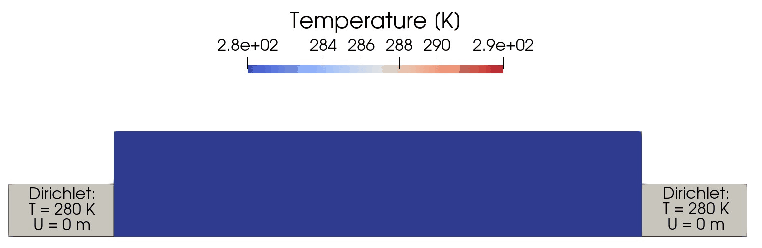

Thermo-elasticity
const dir = string(@__DIR__, "/") # Bcube dir
using Bcube
using LinearAlgebra
using WriteVTK
using StaticArraysFunction space (here we shall use Lagrange P1 elements) and quadrature degree.
const fspace = :Lagrange
const degree = 1 # FunctionSpace degree
const degquad = 2 * degree + 1Input and output paths
const outputpath = joinpath(dir, "../../../myout/elasticity/")
const meshpath = joinpath(dir, "../../../input/mesh/domainThermoElast_tri.msh")Time stepping scheme params
const α = 0.05
const γ = 0.5 + α
const β = 0.25 * (1.0 + α)^2
const totalTime = 10.0
const Δt = 1.0e-2Material parameters (Young's modulus, Poisson coefficient and deduced Lamé coefficients)
const E = 200.0e9
const ν = 0.3
const λ = E * ν / ((1.0 + ν) * (1.0 - 2.0 * ν))
const μ = E / (2.0 * (1.0 + ν))
const Kₜ = 1.0e-6
const ρ = 2500.0
const cₚ = 1000.0
const k = 250.0
const T₀ = 280.0Strain tensor and stress tensor (Hooke's law)
ϵ(u) = 0.5 * (∇(u) + transpose(∇(u)))
σ(u) = λ * tr(ϵ(u)) * I + 2 * μ * (ϵ(u)) # Elastic stress
σₜ(T) = (3 * λ + 2 * μ) * Kₜ * (T - T₀) * I # Thermal stress
π(u, v) = σ(u) ⊡ ϵ(v) # with the chosen contraction convention ϵ should be transposed, but as it is symmetric the expression remains correct
πₜ(T, v) = σₜ(T) ⊡ ϵ(v)materialize for identity operator
Bcube.materialize(A::LinearAlgebra.UniformScaling, B) = AFunction that performs a time step using a Newmark α-HHT scheme The scheme updates the acceleration G, the velocity V and the displacement U using the following formulas:
\[\begin{cases} M G^{n+1} +(1-\alpha)A U^{n+1} + \alpha A U^{n} = (1-\alpha) L^{n+1} + \alpha L^n = L \textrm{(because here $L$ is time independent)} \\ V^{n+1} = V^{n} + (1-\gamma) \Delta t G^n + \gamma \Delta t G^{n+1} \\ U^{n+1} = U^{n} + \Delta t V^{n} + (\frac{1}{2} - \beta)*\Delta t^2 G^{n} + \beta \Delta t^2 G^{n+1} \end{cases}\]
where $M$ is the mass matrix, $A$ is the stiffness matrix and $L$ is the RHS G is then computed by solving the linear system obtained by inserting the expressions for U and V in the equation for G.
function Newmark_α_HHT(dt, L, A, Mat, U0, V0, G0)
L1 = L - α * A * U0
L2 = -(1.0 - α) * (A * U0 + dt * A * V0 + (0.5 - β) * dt * dt * A * G0)
RHS = L1 .+ L2
G = Mat \ RHS
U = U0 + dt * V0 + (0.5 - β) * dt * dt * G0 + β * dt * dt * G
V = V0 + (1.0 - γ) * dt * G0 + γ * dt * G
return U, V, G
endFunction that runs the unsteady case:
function run_unsteady()
mesh = read_msh(meshpath, 2)
fs = FunctionSpace(fspace, degree)
U_scal = TrialFESpace(fs, mesh, Dict("West1" => 280.0, "East1" => 280.0); size = 1)
V_scal = TestFESpace(U_scal)
U_vec = TrialFESpace(
fs,
mesh,
Dict("West1" => SA[0.0, 0.0], "East1" => SA[0.0, 0.0]);
size = 2,
)
V_vec = TestFESpace(U_vec)
# Initialize solution
U = FEFunction(U_vec, 0.0)
U0 = zeros(Bcube.get_ndofs(U_vec))
V0 = zeros(Bcube.get_ndofs(U_vec))
G0 = zeros(Bcube.get_ndofs(U_vec))
T = FEFunction(U_scal, T₀)
# Define measures for cell
dΩ = Measure(CellDomain(mesh), degquad)
# no volume force term
f = PhysicalFunction(x -> SA[0.0, 0.0])
q = PhysicalFunction(
x -> x[1] .* (1.0 .- x[1]) .* x[2] .* (0.2 .- x[2]) .* 1500000000.0,
)
# Definition of bilinear and linear forms for the elasticity problem
a(u, v) = ∫(π(u, v))dΩ
m(u, v) = ∫(ρ * u ⋅ v)dΩ
l(v) = ∫(πₜ(T, v))dΩ
# An alternative way to define this linear form is to use operator composition:
# l(v) = ∫( πₜ ∘ (T, v, ∇(v)) )dΩ
# where πₜ(T, v, ∇v) = σₜ(T) ⊡ ϵ(v, ∇v) and ϵ(v, ∇v) = 0.5*( ∇v + transpose(∇v) )
# Definition of bilinear and linear forms for the heat conduction problem
aₜ(u, v) = ∫(k * ∇(u) ⋅ ∇(v))dΩ
mₜ(u, v) = ∫(ρ * cₚ * u ⋅ v)dΩ
lₜ(v) = ∫(q * v)dΩ
# Assemble matrices and vector
M = assemble_bilinear(m, U_vec, V_vec)
A = assemble_bilinear(a, U_vec, V_vec)
L = assemble_linear(l, V_vec)
AT = assemble_bilinear(aₜ, U_scal, V_scal)
MT = assemble_bilinear(mₜ, U_scal, V_scal)
LT = assemble_linear(lₜ, V_scal)
# Apply homogeneous dirichlet on A and b
Bcube.apply_homogeneous_dirichlet_to_vector!(L, U_vec, V_vec, mesh)
Bcube.apply_dirichlet_to_matrix!((A, M), U_vec, V_vec, mesh)
# Compute a vector of dofs whose values are zeros everywhere
# except on dofs lying on a Dirichlet boundary, where they
# take the Dirichlet value
Td = Bcube.assemble_dirichlet_vector(U_scal, V_scal, mesh)
# Apply lift
LT = LT - AT * Td
# Apply homogeneous dirichlet condition
Bcube.apply_homogeneous_dirichlet_to_vector!(LT, U_scal, V_scal, mesh)
Bcube.apply_dirichlet_to_matrix!((AT, MT), U_scal, V_scal, mesh)
# Write initial solution
Un = var_on_vertices(U, mesh)
Un = transpose(Un)
Tn = var_on_vertices(T, mesh)
mkpath(outputpath)
dict_vars =
Dict("Displacement" => (Un, VTKPointData()), "Temperature" => (Tn, VTKPointData()))
# Write the obtained FE solution
write_vtk(
outputpath * "result_thermoelasticity",
0,
0.0,
mesh,
dict_vars;
append = false,
)
# Time loop
itime = 0
t = 0.0
# Matrix for time stepping
Mat = factorize(M + (1.0 - α) * (β * Δt * Δt * A))
Miter = factorize(MT + Δt * AT)
while t <= totalTime
t += Δt
itime = itime + 1
@show t, itime
# solve time step heat equation
rhs = Δt * LT + MT * (get_dof_values(T) .- Td)
set_dof_values!(T, Miter \ rhs .+ Td)
# solve time step elasticity
U1, V1, G1 = Newmark_α_HHT(Δt, L, A, Mat, U0, V0, G0)
# Update solution
U0 .= U1
V0 .= V1
G0 .= G1
set_dof_values!(U, U1)
L = assemble_linear(l, V_vec)
Bcube.apply_homogeneous_dirichlet_to_vector!(L, U_vec, V_vec, mesh)
# Write solution
if itime % 10 == 0
Un = var_on_vertices(U, mesh)
Un = transpose(Un)
Tn = var_on_vertices(T, mesh)
mkpath(outputpath)
dict_vars = Dict(
"Displacement" => (Un, VTKPointData()),
"Temperature" => (Tn, VTKPointData()),
)
# Write the obtained FE solution
write_vtk(
outputpath * "result_thermoelasticity",
itime,
t,
mesh,
dict_vars;
append = true,
)
# In order to use the warp function in paraview (solid is deformed using the displacement field)
# the calculator filter has to be used with the following formula to reconstruct a 3D displacement field
# with 0 z-component: Displacement_X*iHat+Displacement_Y*jHat+0.0*kHat
end
end
end
run_unsteady()Here is an animation of the obtained result: 
This page was generated using Literate.jl.